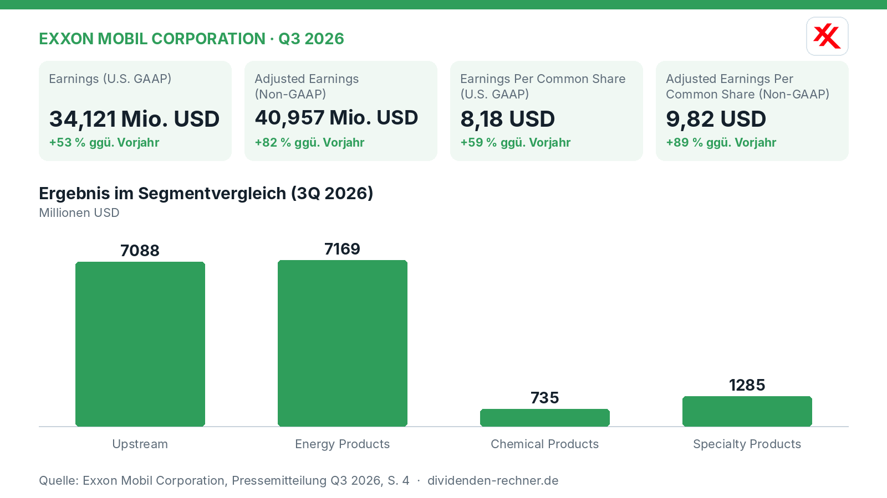
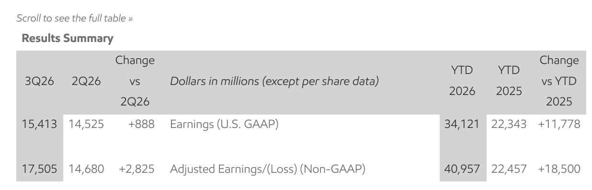
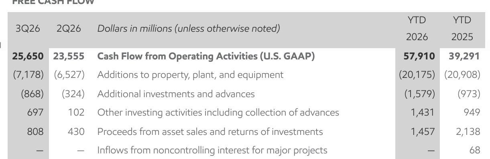

Quartalszahlen

ExxonMobil erzielt im dritten Quartal 17,5 Milliarden Dollar bereinigten Gewinn
ExxonMobil meldet für das dritte Quartal 2026 einen Nettogewinn von 15,4 Milliarden Dollar. Der bereinigte Gewinn klettert deutlich auf 17,5 Milliarden Dollar.

Kurz gesagt
Umsatz: n.a.
Gewinn: 17,5 Mrd. USD (+82 %)
- Ergebnis: Der bereinigte Quartalsgewinn legt im Jahresvergleich stark zu und erreicht 17,5 Mrd. USD.
- Treiber: Höhere Margen im Raffineriegeschäft und eine starke operative Leistung stützen die Erträge.
- Risiko: Marktschwankungen und unvorhersehbare Einflüsse im Nahen Osten belasten zeitweise das Geschäft.
ExxonMobil steigert bereinigten Gewinn dank starker Raffineriemargen deutlich
ExxonMobil hat die Ergebnisse für das dritte Quartal 2026 vorgelegt und blickt auf ein ertragreiches Jahresergebnis zurück. Der bereinigte Gewinn nach Non-GAAP-Standard klettert in den ersten neun Monaten des Jahres auf 41,0 Mrd. USD, was einem kräftigen Plus gegenüber dem Vorjahreszeitraum entspricht. Nach dem offiziellen US-GAAP-Standard beläuft sich das Nettoergebnis im Neunmonatszeitraum auf 34,1 Mrd. USD. Der Ölkonzern profitiert dabei von einer hohen Auslastung der Produktionsanlagen und sinkenden strukturellen Kosten.

Eigene Darstellung nach Daten aus: Exxon Mobil Corporation, Quartalszahlen Q3 2026 vom 2026-10-30 · Original.Im dritten Quartal treiben vor allem das Raffineriegeschäft (Energy Products) und die Öl- und Gasförderung (Upstream) die Erträge an. Wie die Ergebnissübersicht veranschaulicht, steuern beide Bereiche den Löwenanteil zum Konzernergebnis bei. Die Raffinerien liefen mit einer hohen Auslastung, während im Upstream-Bereich vor allem die ertragreichen Projekte in Guyana und im Permian-Becken verlässlich liefern. Konzernchef Darren Woods betont den strategischen Fortschritt:
„In der Öl- und Gasförderung wächst die Produktion, während wir gleichzeitig unsere Effizienz verbessern – das Ergebnis jahrelanger, disziplinierter Investitionen.“
— Darren Woods, Vorstandschef von ExxonMobil (aus dem Englischen übersetzt)

Ergebnissübersicht (Results Summary). Quelle: Exxon Mobil Corporation, Quartalszahlen Q3 2026 vom 2026-10-30 · Original. Ausschnitt nur zugeschnitten, sonst unverändert.Solide Dividende und verlässliche Aktionärsrendite
Die Aktionäre profitieren weiterhin von stabilen Ausschüttungen. ExxonMobil hat im Neunmonatszeitraum erhebliche Summen an die Eigentümer zurückgegeben, getragen von einem robusten operativen Cashflow. Das Unternehmen blickt auf eine lange Historie steigender Ausschüttungen zurück und hält an seiner kontinuierlichen Dividendenpolitik fest. Für das vierte Quartal ist eine Zahlung von 1,07 USD je Aktie vorgesehen. Der bereinigte Gewinn je Aktie erreicht im Neunmonatszeitraum 9,82 USD, nach 5,19 USD im Vorjahr.
Starker Cashflow federt Investitionen ab
Die Finanzlage des Konzerns präsentiert sich solide. Der operative Cashflow beläuft sich in den ersten neun Monaten auf 57,9 Mrd. USD und übertrifft damit den Vorjahreswert von 39,3 Mrd. USD deutlich. Diese Mittel erlauben es dem Management, die umfangreichen Investitionen in Sachanlagen und neue Projekte aus eigener Kraft zu finanzieren, während gleichzeitig Aktienrückkäufe in Milliardenhöhe getätigt werden. Die Nettoverschuldung bleibt dank strenger Kostendisziplin und struktureller Einsparungen auf einem überschaubaren Niveau. Die kumulierten Einsparungen seit 2019 belaufen sich inzwischen auf 16,9 Mrd. USD.

Free Cash Flow. Quelle: Exxon Mobil Corporation, Quartalszahlen Q3 2026 vom 2026-10-30 · Original. Ausschnitt nur zugeschnitten, sonst unverändert.Bewertung und Marktumfeld im Blick
An der Börse wird ExxonMobil derzeit zu einem moderaten Kurs-Gewinn-Verhältnis gehandelt, während die Dividendenverläufe für verlässliche Erträge bei den Anlegern sorgen. Die Aktie spiegelt damit die zyklische Natur des Rohstoffsektors wider, in dem die Ertragskraft stark von den globalen Energiepreisen abhängt. Historisch zeigt sich, dass ExxonMobil seine Ausschüttungen traditionell zum Jahresende bestätigt und im Frühjahr anpasst.
Ausblick und Risiken im Energiemarkt
Für die kommenden Quartale bleibt das Unternehmen fokussiert auf Effizienz und den Ausbau margenstarker Projekte. Dennoch lauern Risiken im Marktumfeld. Schwankungen bei den Öl- und Gaspreisen, geopolitische Spannungen sowie unvorhersehbare Entgelte und Sondereffekte im Nahen Osten können die Ergebnisse kurzfristig belasten. Zudem erfordert der Übergang zu emissionsärmeren Technologien weiterhin hohe Kapitaleinsätze, deren Rentabilität sich erst langfristig erweisen muss.
Die wichtigsten Zahlen im Überblick
| Kennzahl | Wert | Veränderung zum Vorjahr | Quelle |
|---|---|---|---|
| Earnings (U.S. GAAP) | 34,121 Mio. USD | +53 % | S. 2 |
| Adjusted Earnings (Non-GAAP) | 40,957 Mio. USD | +82 % | S. 2 |
| Earnings Per Common Share (U.S. GAAP) | 8,18 USD | +59 % | S. 3 |
| Adjusted Earnings Per Common Share (Non-GAAP) | 9,82 USD | +89 % | S. 3 |
Cashflow und Bilanz im Vergleich
| Kennzahl | Aktuell | Vorjahr / Vorjahr | Veränderung |
|---|---|---|---|
| Operativer Cashflow, Berichtszeitraum | 57.910 Mio. USD | 39.291 Mio. USD | +47,4 % |
Cashflow: Zeitraum seit Jahresbeginn, Vergleich mit dem Vorjahreszeitraum. Bilanz: Vergleich mit dem angegebenen Stichtag. Free Cashflow und Nettoverschuldung eigene Berechnung aus Angaben des Berichts.
Quelle: Exxon Mobil Corporation, Quartalszahlen Q3 2026 vom 2026-10-30. Rechenwege eigene Berechnung. Keine Anlageberatung.
Hinweis: Dieser Text dient der allgemeinen Information und ist weder Anlage-, Steuer- noch Rechtsberatung. Kapitalanlagen sind mit Risiken verbunden, bis hin zum Totalverlust.